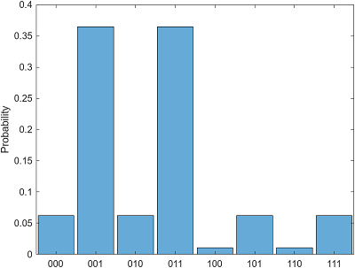
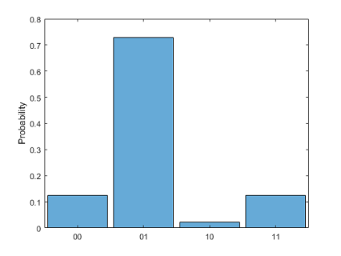
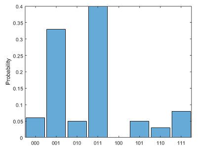
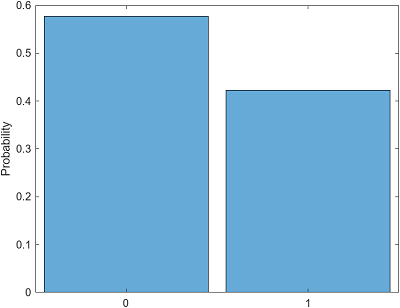
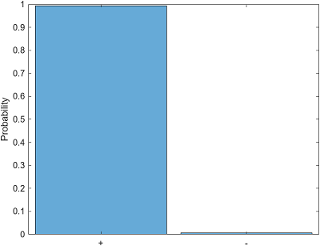
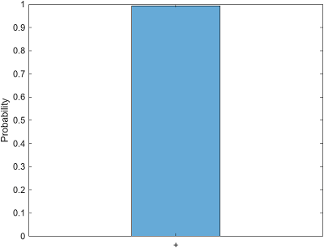

histogram
Installation Required: This functionality requires MATLAB Support Package for Quantum Computing.
Description
histogram( plots a histogram of each
possible state and its probability from the specified quantum state or measurement. The
input s)s must be a QuantumState or
QuantumMeasurement object.
If
sis aQuantumStateobject, thenhistogramplots each possible state and the probability of measuring that state.If
sis aQuantumMeasurementobject, thenhistogramplots each measured state and the estimated probability of that state.
histogram(___,
specifies options using one or more name-value arguments in addition to any of the input
argument combinations in previous syntaxes. For example, you can choose the basis in which
each qubit is represented or a probability threshold to include states in the
histogram.Name=Value)
h = histogram(___)Histogram object. Use this object to inspect and adjust the properties
of the histogram. For a list of properties, see Histogram Properties.
Examples
Create a quantum circuit that consists of three
x-axis rotation gates. The first gate acts on qubit 1 with rotation
angle pi/4, the second gate acts on qubit 2 with rotation angle
pi/2, and the third gate acts on qubit 3 with rotation angle
3*pi/4.
g = rxGate(1:3,pi/4*(1:3)); c = quantumCircuit(g);
Simulate this circuit using the default initial state, where all qubits are in the state.
s = simulate(c)
s =
QuantumState with properties:
BasisStates: [8×1 string]
Amplitudes: [8×1 double]
NumQubits: 3Show the final state after simulating this circuit.
str = formula(s)
str =
"(0.25+0i) * |000> +
(0-0.60355i) * |001> +
(0-0.25i) * |010> +
(-0.60355+0i) * |011> +
(0-0.10355i) * |100> +
(-0.25+0i) * |101> +
(-0.10355+0i) * |110> +
(0+0.25i) * |111>"Plot the histogram of the final state to show each possible state and its probability distribution.
histogram(s)

You can also specify which qubits to plot in the histogram. The histogram shows the possible states of the specified qubits (where the other qubits can be in any state) and their corresponding probability distributions (where the probabilities of the other qubits being in any state are combined).
For example, specify qubits 1 and 3 to plot in the histogram. This histogram shows
the possible states , , , and , where their corresponding probabilities are 0.125,
0.7286, 0.0214, and
0.125.
histogram(s,[1 3])

To query each possible state of all qubits and its probability distribution, use the
querystates function.
[states,probabilities] = querystates(s)
states =
8×1 string array
"000"
"001"
"010"
"011"
"100"
"101"
"110"
"111"
probabilities =
0.0625
0.3643
0.0625
0.3643
0.0107
0.0625
0.0107
0.0625You can also specify which qubits to query when using
querystates.
[states,probabilities] = querystates(s,[1 3])
states =
4×1 string array
"00"
"01"
"10"
"11"
probabilities =
0.1250
0.7286
0.0214
0.1250Create a quantum circuit that consists of three
x-axis rotation gates. The first gate acts on qubit 1 with rotation
angle pi/4, the second gate acts on qubit 2 with rotation angle
pi/2, and the third gate acts on qubit 3 with rotation angle
3*pi/4.
g = rxGate(1:3,pi/4*(1:3)); c = quantumCircuit(g);
Simulate this circuit using the default initial state, where all qubits are in the state. After running the circuit, randomly sample the quantum state with 100 shots and return the resulting simulated measurement.
s = simulate(c); m = randsample(s,100)
m =
QuantumMeasurement with properties:
MeasuredStates: [7×1 string]
Counts: [7×1 double]
Probabilities: [7×1 double]
NumQubits: 3Show the counts and estimated probabilities of the measured states.
table(m.Counts,m.Probabilities,m.MeasuredStates, ... VariableNames=["Counts","Probabilities","States"])
ans =
7×3 table
Counts Probabilities States
______ _____________ ______
6 0.06 "000"
33 0.33 "001"
5 0.05 "010"
40 0.4 "011"
5 0.05 "101"
3 0.03 "110"
8 0.08 "111" Plot the histogram of the measurement result to show each measured state and its estimated probability.
histogram(m)

To show all possible states in the histogram, even if these states have 0
measurement probability, specify a threshold value of "none" when
using
histogram.
histogram(m,Threshold="none")
To query each possible state and its estimated probability, use the
querystates function and specify the threshold as
"none".
[states,probabilities] = querystates(m,Threshold="none")states =
8×1 string array
"000"
"001"
"010"
"011"
"100"
"101"
"110"
"111"
probabilities =
0.0600
0.3300
0.0500
0.4000
0
0.0500
0.0300
0.0800Create a quantum state for a single qubit.
s = quantum.gate.QuantumState([0.76 0.65])
s =
QuantumState with properties:
BasisStates: [2×1 string]
Amplitudes: [2×1 double]
NumQubits: 1Plot the histogram of this state in the default Z basis.
histogram(s)

Plot the histogram in the X basis by specifying the Basis
name-value argument as "X".
histogram(s,Basis="X")
Plot the histogram including only states with a probability greater than 0.05.
Specify the probability threshold as 0.05 by using the
Threshold name-value argument.
histogram(s,Basis="X",Threshold=0.05)
Input Arguments
Name-Value Arguments
Tips
To return the possible states and their probabilities, you can use
querystates. Thequerystatesfunction (with two output arguments) has the same syntaxes ashistogram.
Version History
Introduced in R2023a